Efficient business regulation leads to greater market entry, job creation, higher productivity and improved levels of overall economic development.1 Even though the scope of the Doing Business indicators is limited by necessity, there is well-established evidence that moving from the lowest quartile of improvement in business regulation to the highest quartile is associated with significant increases in annual economic growth per capita.2 A large body of literature indicates that the simplification of business entry regulation results in higher numbers of new businesses and an increased rate of employment.3 Research covering 172 economies in the period from 2006 to 2010 shows that each additional business regulatory reform is associated with an average increase of 0.15% in economic growth. Indeed, business regulatory reforms might have helped to mitigate the effects of the 2008 global financial crisis since economies that undertook more reforms experienced higher economic growth rates.4
▪ In the year ending June 1, 2016, 137 economies implemented 283 total reforms across the different areas measured by Doing Business, an increase of over 20% from last year.
▪ Doing Business has recorded more than 2,900 regulatory reforms making it easier to do business since 2004.
▪ The economies showing the most notable improvement in performance on the Doing Business indicators in 2015/16 were Brunei Darussalam, Kazakhstan, Kenya, Belarus and Indonesia.
▪ Reforms inspired by Doing Business have been implemented by economies in all regions. But Europe and Central Asia continues to be the region with the highest share of economies implementing at least one reform—96% of economies in the region have implemented at least one business regulatory reform.
▪ Starting a business continues to be the most common reform area with 49 reforms, followed by paying taxes with 46.
▪ Increasingly, the competitiveness of cities is seen as an important driver of job creation and economic growth. By focusing on cities, subnational Doing Business studies contribute to the improvement of their competitiveness, providing information to policy makers on how to reform the business regulatory environment.
Regulation is necessary to maintain efficient, safe and orderly societies. Doing Business focuses on the development of streamlined, necessary and competent regulatory practices that facilitate private sector development rather than create unnecessary bureaucratic obstacles and opportunities for rent seeking. Doing Business advocates adherence to established good practices like free access to information, transparency of fees and the use of online services. Since the publication of the first Doing Business report, governments around the world have implemented over 2,900 reforms striving to align domestic business regulation with the good practices advocated by Doing Business. Many governments use Doing Business indicator sets to formulate and monitor their reform efforts. The Indian government, for example, has committed to improving its Doing Business ranking by steadily implementing reforms across all indicators (box 3.1).5
BOX 3.1 India has embarked on an ambitious reform path
The current government of India was elected in 2014 on a platform of increasing job creation, mostly through encouraging investment in the manufacturing sector. Soon after the elections policy makers realized that for this to occur substantial improvements would need to be made to the country’s overall business regulatory environment. The Doing Business indicators have been employed as one of the main measures to monitor improvements in India’s business climate. As a result of the election platform-driven reform agenda, over the past two years the Doing Business report has served as an effective tool to design and implement business regulatory reforms.
The data presented by the Doing Business indicators have led to a clear realization that India is in need of transformative reforms. The country has embarked on a fast-paced reform path, and the Doing Business 2017 report acknowledges a number of substantial improvements. For example, India has achieved significant reductions in the time and cost to provide electricity connections to businesses. In 2015/16 the utility in Delhi streamlined the connection process for new commercial electricity connections by allowing consumers to obtain connections for up to 200 kilowatt capacity to low-tension networks. This reform led to the simplification of the commercial electricity connection process in two ways. First, it eliminated the need to purchase and install a distribution transformer and related connection materials, as the connection is now done directly to the distribution network, leading to a reduction in cost. Second, the time required to conduct external connection works by the utility has been greatly reduced due to the low-tension connection and there is no longer a need to install a distribution transformer. As a result, the time needed to connect to electricity was reduced from 138 days in 2013/14 to 45 days in 2015/16. And in the same period, the cost was reduced from 846% of income per capita to 187%.
Over the past three years, the utility in Delhi has substantially reduced the time and cost of obtaining an electricity connection
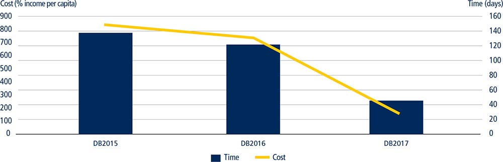
Source: Doing Business database.
Furthermore, India has made paying taxes easier by introducing an electronic system for paying employee state insurance contributions. In the area of trade, as of April 2016 the Customs Electronic Commerce Interchange Gateway portal allowed for the electronic filing (e-filing) of integrated customs declarations, bills of entry and shipping bills, reducing the time and cost for export and import documentary compliance. The portal also facilitates data and communication exchanges between applicants and customs, reducing the time for export and import border compliance. Additionally, an Integrated Risk Management System has become fully operational and ensured that all the consignments are selected based on the principles of risk management. Furthermore, the government of India adopted the Companies (Amendment) Act (No. 21) in May 2015. The amendments were published in the official gazette and immediately entered into force upon notification by the Ministry of Corporate Affairs. As a result, the minimum capital requirement for company incorporation was abolished and the requirement to obtain a certificate to commence business operations was eliminated. To improve court efficiency, the passage of the Commercial Courts, Commercial Divisions and Commercial Appellate Divisions Act of 2015 established effective mechanisms for addressing commercial cases. And in May 2016 the government of India enacted the Insolvency and Bankruptcy Code (IBC), which—when it comes into effect—will overhaul the 60-year-old framework for company liquidation and introduce new insolvency practices.
The experience of implementing reforms based on Doing Business data has demonstrated to the government the significance of establishing clear stakeholder feedback mechanisms to close the gaps between policy formulation and implementation. Finally, the government has also acknowledged the need to implement reforms across the country—not just in Mumbai and Delhi, which are the cities covered by Doing Business. Lawmakers have recommended the implementation of a large number of reforms across all states, going beyond the scope of Doing Business.
In Japan the government aims to improve the economy’s Doing Business ranking from 19 (among 31 OECD high-income economies) to the top three. To achieve this goal, Haidar and Hoshi (2015) outlined 31 reform recommendations classified into six different categories depending on whether the reform was administrative or legal and on the level of potential political resistance.6 Proposed administrative changes with low political resistance include the electronic submission and processing of export and import documents, fast-track procedures for property transfers and the consolidation of bureaucratic processes at the Legal Affairs Office. Administrative changes with medium political resistance focus on the reduction of the number of procedures to obtain a construction permit, development of specialized commercial courts and expansion of case management systems. An administrative change that will most likely face high political resistance is the introduction of performance measures for judges due to the division of power between the legal system, the government and the business environment.7
Regulatory reforms inspired by Doing Business have been implemented by economies in all regions. Rwanda, which ranks second in Africa in Doing Business 2017, is an example of an economy that used Doing Business as a guide to improve its business environment. From Doing Business 2005 to Doing Business 2017 Rwanda implemented a total of 47 reforms across all indicators. Rwanda is one of only 10 economies that have implemented reforms in all of the Doing Business indicators and every year since Doing Business 2006.8 These reforms are in line with Rwanda’s Vision 2020 development strategy, which aims to transform Rwanda from a low-income economy to a lower-middle-income economy by raising income per capita from $290 to $1,240 by 2020.9
Doing Business is widely used by policy makers in Sub-Saharan Africa to advance their reform agendas. Some of these economies have established units dedicated to specific reform action plans targeting the Doing Business indicators. In Kenya, for example, the Ease of Doing Business Delivery Unit operates under the leadership of the Ministry of Industrialization and the Deputy President, meeting on average every two weeks to discuss progress on an established action plan. The meeting is chaired by either the Deputy President or the Minister of Industrialization, while several stakeholder agencies are responsible for implementing measures stated in the action plan.
In Burundi, the investment climate reform agenda is overseen by the Office of the Second Vice President. The dedicated Doing Business Intelligence Committee comprises several ministers and is supported by an executive secretariat, which assumes the day-to-day work and reform coordination as well as public-private dialogue and communication on current reforms. Nigeria’s government, which came to power in 2015, has placed a strong emphasis on increasing the country’s competitiveness. In early 2016 Nigeria established the Presidential Enabling Business Environment Council, which is chaired by the Vice President; the Federal Minister of Industry, Trade and Investment is the vice-chairman. The Council’s main mandate is the supervision of the competitiveness and investment climate agenda at the federal and state levels, while the Enabling Business Environment Secretariat is charged with day-to-day reform implementation.
Similarly, the Prime Minister of Côte d’Ivoire is the champion of the investment climate reform agenda and chairs the National Interdepartmental Doing Business Committee. The prerogative of this committee, which includes public and private sector stakeholders, is to formulate the reform agenda and to ensure the high-level monitoring of its implementation. Its permanent secretariat assumes coordination and implementation of the established reform agenda. In Zimbabwe, the Office of the President and Cabinet oversees the Doing Business reform initiative using a Rapid Results Initiative approach. The Chief Secretary to the President and Cabinet is the strategic sponsor of the Initiative. Permanent Secretaries from more than 10 ministries are responsible for implementing measures outlined in the action plan for each of the Doing Business indicators.
Recently some reform efforts have advanced beyond the geographic boundaries of individual states. In 2015, 10 economies came together to form the Association of Southeast Asian Nations (ASEAN) Economic Community, a single market economy for goods, services, capital and labor, which—once it is realized—could result in a market larger than the European Union or North America. This year the 10 ASEAN economies implemented a total of 31 reforms across the Doing Business indicators—including six reforms in the area of paying taxes and six reforms in the area of getting credit. Malaysia, for example, introduced an online system for filing and paying goods and services tax and strengthened credit reporting by beginning to provide consumer credit scores.
ASEAN can also learn from other Asia-Pacific Economic Cooperation (APEC) economies how to reform and create a uniform business environment. The APEC Ease of Doing Business (EoDB) initiative set a goal of an APEC-wide improvement of 25% by 2015 in five Doing Business indicators: starting a business, dealing with construction permits, getting credit, trading across borders and enforcing contracts. This goal—of making doing business faster, cheaper and easier—was endorsed by APEC leaders in 2009. By 2015 APEC economies reached an improvement of 12.7% and launched the EoDB Action Plan (2016-2018) to further this effort. The new target was an improvement of 10% by 2018 in the existing five priority areas using the baseline data of 2015.10 The main overarching objectives across the recommendations are simplifying and streamlining business processes, creating electronic platforms and establishing a single-interface service.
The private sector is universally recognized as being a key driver of economic growth and development. Nearly 90% of employment, including formal and informal jobs, occurs within the private sector, which has an abundant potential that should be harnessed.11 Governments in many economies work together with the private sector to create a thriving business environment. One way of doing this is through implementing effective business regulation that ensures that all actors have fair and equal opportunities to participate in a competitive market. More specifically, effective business regulation can encourage firm creation and growth and minimize market distortions or failures. Doing Business continues to capture dozens of reforms implemented through its 11 indicator sets.
In 2015/16, 137 economies implemented 283 reforms across different areas measured by Doing Business. The most reformed indicators this cycle are starting a business, paying taxes and getting credit. The region with the highest share of reforms across all topics is Europe and Central Asia, continuing a trend begun well over a decade ago (table 3.1). Indeed, 96% of economies in the region have implemented at least one business regulatory reform recorded by Doing Business 2017. Kazakhstan, Georgia and Belarus are regional leaders on the total count of reforms, implementing seven, five and four reforms, respectively.
TABLE 3.1 Economies in Europe and Central Asia have the highest share of reformers in 2015/16
Area of reform |
Number of reforms in 2015/16 |
Region with the highest share of reformers in 2015/16 |
Starting a business |
49 |
Middle East & North Africa |
Dealing with construction permits |
18 |
Europe & Central Asia |
Getting electricity |
21 |
Europe & Central Asia |
Registering property |
22 |
Europe & Central Asia |
Getting credit |
34 |
East Asia & Pacific |
Protecting minority investors |
19 |
Europe & Central Asia |
Paying taxes |
46 |
Europe & Central Asia |
Trading across borders |
32 |
South Asia |
Enforcing contracts |
18 |
Europe & Central Asia |
Resolving insolvency |
24 |
Sub-Saharan Africa |
Source: Doing Business database.
Note: The labor market regulation indicators also recorded 21 regulatory changes in the Doing Business 2017 report. These changes are not included in the total reform count.
BOX 3.2 Subnational Doing Business studies in Mexico and Colombia: reforming through competition and collaboration
In 2005 Mexico requested that the World Bank expand the Doing Business benchmarks beyond Mexico City to assess the business regulatory environment across states, arguing that the capital city was not representative of Mexico as a whole. A decade later subnational Doing Business studies have been replicated across the globe, measuring 438 locations in 65 economies and recording 583 regulatory reforms. The strong demand for subnational Doing Business studies proves that comparisons among locations within the same economy and the sharing of good practices are strong drivers of reform.
By leveraging the methodology of Doing Business and combining it with a strong engagement strategy with local authorities, subnational Doing Business studies increase ownership of the reform agenda at all levels of government. The results from repeated benchmarking exercises in Colombia and Mexico—three and six rounds, respectively—and the growing commitment from government partners in these countries provide examples of how subnational Doing Business studies can be used as a public policy tool to identify local differences, guide reform efforts and track progress over time.
Over the course of the subnational series in Mexico, the number of states reforming has increased considerably. Greater buy-in from different government institutions has also expanded the range of reforms. The first two rounds recorded reforms in the majority of the states, but not all. However, soon after the first study, competition and collaboration spurred the reform momentum and, since 2012, all the 32 states have embarked on an active path to reform. States and municipalities began to expand their reform efforts to a larger number of areas. They did this by strengthening intragovernmental collaboration—between state, municipal and national authorities—and reaching out to the judiciary. With the support of the judiciary, Mexico introduced legal reforms to facilitate contract enforcement. Between 2012 and 2016 the Mexican states of Colima, Estado de México, Puebla, San Luis Potosí and Sinaloa reformed in all four areas measured by the project. Subnational Doing Business has recorded a total of 252 regulatory improvements across all states in Mexico to date.
In Mexico the top improvers started out as the worst performers
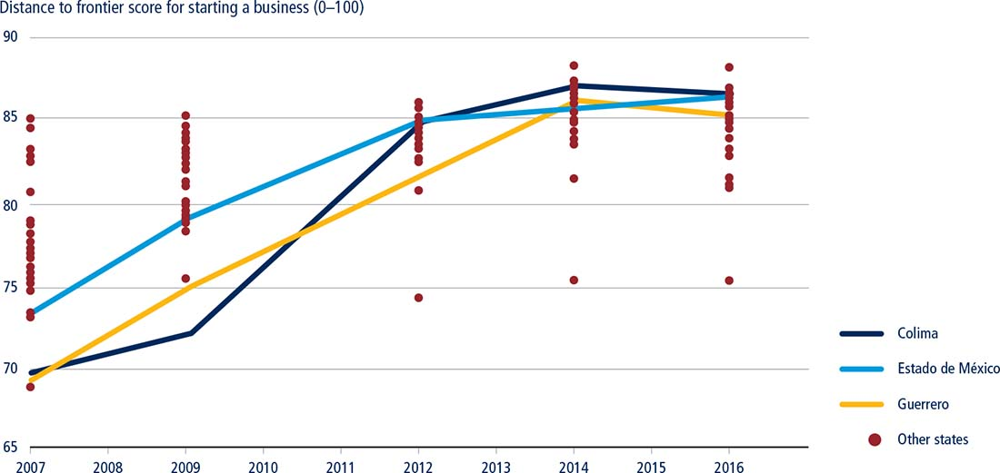
Source: Doing Business database.
Note: Among Mexican states Colima, Estado de México and Guerrero have made the most improvement on the starting a business indicator set since 2007.
In Colombia 100% of locations reformed after the first benchmark in 2008. The third round in 2012 covered 23 locations and recorded a total of 62 reforms across all indicators. Those locations that had initially ranked poorly—the large business centers such as Medellín, Bucaramanga and Cartagena—improved the most that year. The findings of the subnational studies spurred technical assistance programs implemented by the national government to support local reforms. The fourth round, in 2017, will expand the geographic coverage to measure all departments (states) in Colombia for the first time.
The findings of subnational Doing Business studies not only encourage competition but also inspire peer-to-peer learning initiatives by highlighting good practices in an economy. Peer-to-peer learning can be one of the most powerful drivers of reforms, particularly when good practices are replicated within the cities of the same economy. Cities with inefficient business regulation benefit the most from such practice, learning from a wealth of information available on national good practices. It is therefore not uncommon to see cities that performed poorly in a business regulatory area to show a steep improvement in the next round of measurement.
In Colombia the cities of Neiva and Cartagena stand out. Neiva, which ranked last in Colombia’s subnational Doing Business study in 2008, established an “anti-red tape” committee, bringing together the municipality, chamber of commerce, business associations and representatives of national agencies, such as the police and the tax authority. This committee met every month to propose changes to the regulatory environment and monitor progress. As a result, Neiva launched a one-stop shop for business registration which connected the municipal and state governments, eliminating 11 procedures required to start a business and speeding up the process by five weeks.
After finishing near the bottom of the ranking on the ease of starting a business twice in a row, the Mayor of Cartagena put forward an ambitious plan to eliminate the bottlenecks identified by subnational Doing Business. In a joint effort between the city and the private sector, Cartagena was able to implement reforms that reduced the time to register a company by half and costs by over 60%. As a result, Cartagena rose from a ranking of 21 on the ease of starting a business in 2008 to a ranking of 6 in 2012.
Mexican states have also made marked improvements in their performance in the subnational Doing Business studies. In 2007 Colima, Estado de México and Guerrero were several of the states where it was most challenging to start a business. It took on average two months and 18% of income per capita for entrepreneurs to formally start their business. In 2016 it takes entrepreneurs in Colima, Estado de Mexico and Guerrero no more than two weeks to start a business and on average their costs have been reduced by half.
Competitive cities can be drivers of job creation and economic growth. By focusing on cities, the subnational Doing Business studies contribute to the improvement of their competitiveness, providing information to policy makers on how to reform the business regulatory environment. Ultimately, competitive cities can help eliminate extreme poverty and promote prosperity for all citizens.a
a. Kilroy, Mukhim and Negri 2015.
In 2015/16, 29 economies implemented a net of at least three reforms improving their business regulatory systems or related institutions as measured by Doing Business. These 29 include economies from all income groups: low-income (seven economies), lower-middle-income (nine), upper-middle-income (eight) and high-income (five). Ten economies in Sub-Saharan Africa made a net of at least three reforms making it easier to do business in 2015/16.
The 10 economies showing the most notable improvement in performance on the Doing Business indicators in 2015/16 were Brunei Darussalam, Kazakhstan, Kenya, Belarus, Indonesia, Serbia, Georgia, Pakistan, the United Arab Emirates and Bahrain (table 3.2). These economies together implemented 48 business regulatory reforms across all of the areas measured by Doing Business. Overall, the 10 top improvers implemented the most regulatory reforms in the areas of getting electricity and registering property—with seven reforms for each indicator set. These economies also actively reformed in the areas of starting a business and protecting minority investors, with six reforms in each area. Kazakhstan and Georgia joined the list of top improvers for the fourth time in the past 12 years.
TABLE 3.2 The 10 economies improving the most across three or more areas measured by Doing Business in 2015/16
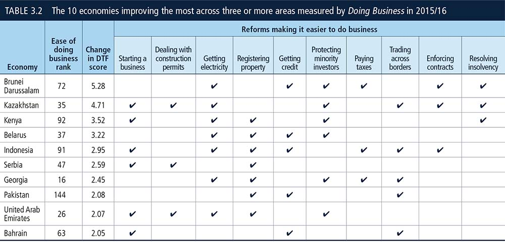
Source: Doing Business database.
Note: Economies are selected on the basis of the number of reforms and ranked on how much their distance to frontier score improved. First, Doing Business selects the economies that implemented reforms making it easier to do business in 3 or more of the 10 areas included in this year’s aggregate distance to frontier score. Regulatory changes making it more difficult to do business are subtracted from the number of those making it easier. Second, Doing Business ranks these economies on the increase in their distance to frontier score from the previous year. The improvement in their score is calculated not by using the data published in 2015 but by using comparable data that capture data revisions and methodology changes. The choice of the most improved economies is determined by the largest improvements in the distance to frontier score among those with at least three reforms.
TABLE 3.3 Who reduced regulatory complexity and cost or strengthened legal institutions in 2015/16—and what did they do?
Source: Doing Business database.
Note: Reforms affecting the labor market regulation indicators are included here but do not affect the ranking on the ease of doing business.
Two economies from East Asia and the Pacific made it to the list of 10 top improvers. Brunei Darussalam made the biggest advance toward the regulatory frontier in 2015/16, thanks to six business regulatory reforms. Brunei Darussalam, for instance, increased the reliability of power supply by implementing an automatic energy management system to monitor outages and service restoration. To improve access to credit, it began distributing consumer data from utility companies. Brunei Darussalam also passed a new insolvency law, offering protections for secured creditors during an automatic stay in reorganization proceedings. In addition, Brunei Darussalam strengthened minority investor protections by making it easier to sue directors in case of prejudicial related-party transactions and by allowing the rescission of related-party transactions that harm companies.
Indonesia made starting a business easier by abolishing the paid-in minimum capital requirement for small and medium-size enterprises and encouraging the use of an online system for name reservation. In Jakarta, a single form to obtain company registration certificates and trading licenses was also created. Getting electricity was made easier in Indonesia by reducing the time for contractors to perform external work thanks to an increase in the stock of electrical material supplied by the utility. In Surabaya, getting electricity was also made easier after the utility streamlined the process for new connection requests. In addition, Indonesia digitalized its cadastral records and launched a fully automated geographic information system, making it easier to register a property. Moreover, Indonesia established a modern collateral registry and introduced a dedicated procedure for small claims for commercial litigation. In the area of trading across borders, it improved the customs services and document submission functions of the Indonesia National Single Window. Finally, Indonesia made paying taxes easier by introducing an online system for filing tax returns and paying health contributions.
Economies in Europe and Central Asia continued to reform actively in 2015/16. Kazakhstan and Georgia increased the reliability of the electricity supply by starting to penalize utilities for having poor power outage indicators. Both economies also strengthened minority investor protections by increasing shareholder rights in major decisions, clarifying ownership and control structures and requiring greater corporate transparency. In the area of trading across borders, Kazakhstan made exporting less costly by eliminating two documents previously required for customs clearance; Georgia made import and export documentary compliance faster by improving its electronic document processing system. Belarus improved its business climate by establishing a one-stop shop at the electricity utility, launching an electronic geographic information system for property registration, providing consumer credit scores to banks and regulated financial institutions and by introducing remedies in cases where related-party transactions are harmful to the company. Owing to streamlined processes and time limits, Serbia reduced the time needed to start a business, obtain a building permit and transfer property.
Pakistan and Bahrain improved access to credit information by adopting new regulations that guarantee by law borrowers’ rights to inspect their credit data. Trading across borders also became easier by improving infrastructure and streamlining procedures in Bahrain and introducing a new electronic platform for customs clearance in Pakistan. Among other reforms, the United Arab Emirates made dealing with construction permits easier by implementing risk-based inspections and streamlining the final joint inspection with the process of obtaining a completion certificate. The United Arab Emirates also reduced the time required to obtain a new electricity connection by implementing a new program with strict deadlines for reviewing applications, carrying out inspections and installing meters. Additionally, the United Arab Emirates introduced compensation for power outages.
Studies have shown that removing excessive bureaucratic formalities in the start-up process has numerous benefits for both economies and entrepreneurs. Some of these gains include higher levels of firm formalization, economic growth and greater profits.12 Governments embark on various reform paths to improve business incorporation processes and encourage entrepreneurship. In 2015/16, 49 reforms were captured by the starting a business indicator set, ranging from removing redundant processes required to operate formally to expanding the use of modern technology and creating or improving one-stop shops.
Onerous incorporation processes cost entrepreneurs time and money. During 2015/16 one-third of the reforms captured by the starting a business indicators involved streamlining the formalities for registering a business. The government of Sri Lanka, for example, waived the stamp duty on issued shares. Similarly, by repealing a requirement to have registra-tion documents signed before a commis-sion of oaths Ireland, Kenya and Uganda significantly reduced the time needed by entrepreneurs to start a business. All of these actions have significantly reduced the number of interactions between entrepreneurs and government officials, thereby lowering opportunities for rent-seeking.
Governments continue to improve their efficiency through the use of technology. In the past year, Doing Business data show that economies that implement online procedures see a reduction in the time taken to start a business (figure 3.1). In 2015/16, 20% of economies reforming company startup processes either introduced or improved online portals. The Nigerian Corporate Affairs Commission, for example, launched an online registration portal allowing companies to reserve their names electronically. Rwanda now has a fully functioning electronic portal that combines company registration, information on tax obligations and duties and value added tax registration—saving entrepreneurs an average of two days and eliminating two interactions with government officials.
FIGURE 3.1 Economies implementing online procedures in 2015/16 have reduced the time needed to start a business
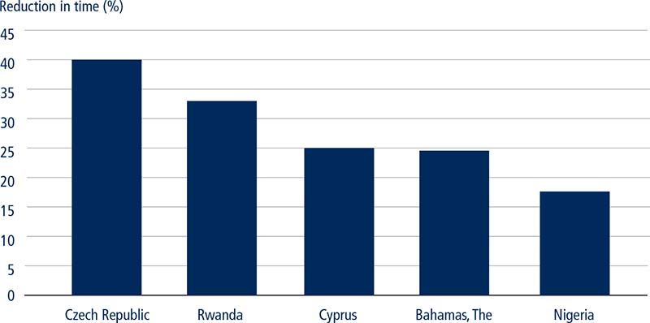
Source: Doing Business database.
Several economies also reformed their one-stop shops for business registration in 2015/16. Cyprus merged the process of registration for value added tax and corporate income tax. Likewise, Malta’s companies register and inland revenue department merged their operations to allow the automatic generation of tax identification numbers. The Arab Republic of Egypt created a unit inside its one-stop shop to facilitate and streamline interactions between entrepreneurs and various governmental agencies. Egyptian entrepreneurs now have fewer direct interactions with regulatory agencies when completing both registration and postregistration procedures.
The construction industry is a vital sector of an economy. It stimulates growth by attracting sizeable investments and supporting supply chains, thereby generating employment and contributing to the process of capital formation.13 Research suggests that the construction industry is responsible for 6% of global GDP—or a 5% share of GDP in developed economies and an 8% share in developing economies.14 Over the past three years economies have mostly focused their construction-permitting reforms on streamlining procedures and improving coordination among the various agencies involved in the process. Other common areas of improvement included reducing the time and cost incurred by builders, followed by improving electronic platforms and building quality control processes (figure 3.2).
FIGURE 3.2 Construction reforms have mostly focused on streamlining procedures over the past three years
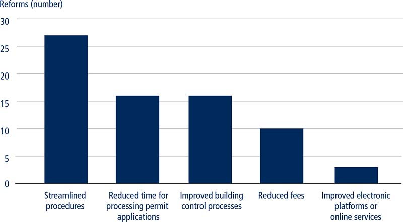
Source: Doing Business database.
In the area of construction, five of 18 economies reduced the time it takes to obtain a building permit in 2015/16. Algeria and Cameroon, for example, enforced the processing time limits prescribed by law. Similarly, the Democratic Republic of Congo improved building quality controls and compliance with legal time limits to obtain a building permit. Zimbabwe streamlined the approval process for construction permits by improving interagency coordination between the Harare City Council and architectural agencies.
Five economies—Cameroon, Côte d’Ivoire, Madagascar, the Philippines and the United Arab Emirates—improved their performance on the building quality control index by increasing the transparency of building regulations. In the Philippines, for example, the Department of Building Official Services of Quezon City updated its website to list the required pre-approvals needed to obtain a construction permit. With respect to cost reduction, both France and San Marino reduced the fees for obtaining a building permit.
Botswana’s Gaborone City Council abolished a requirement to present a rates clearance certificate when applying for a building permit, thereby easing bureaucratic requirements. Poland eliminated a requirement to obtain technical conditions for utilities and clearance from the public roads administrator. Kazakhstan introduced a single window portal to streamline the approvals process to obtain a building permit. The Russian Federation abolished the requirement to obtain an approval to fence construction sites in St. Petersburg. Capitalizing on advancements in modern technology, Serbia made it mandatory to request a building permit online through the e-permit system. Likewise, Singapore enhanced its electronic one-stop shop, making the process of obtaining approvals from different authorities easier. Finally, Albania’s Constitutional Court lifted a moratorium on issuing construction permits. As a result, the issuance of building permits has been resumed.
A reliable electricity supply—as well as an efficient connection process—is linked to better firm performance, especially in industries that require a steady supply of electricity.15 In fact, a reliable electricity supply is associated with higher firm production efficiency and higher levels of foreign direct investment.16 A more efficient connection process is associated with positive electricity sector outcomes, such as higher rates of electrification and lower numbers of bribe payments.17 Economies can substantially improve their business environment by investing in the electricity sector.
One index included in the getting electricity indicator set is the quality of supply and transparency of tariffs index. In 2015/16, seven economies—Algeria, Brunei Darussalam, Bulgaria, Georgia, Kazakhstan, the Lao People’s Democratic Republic and the United Arab Emirates—implemented reforms in this capacity. To improve the reliability of the power supply the utility in Bulgaria is now using an automatic energy management system, SCADA (Supervisory Control and Data Acquisition), to monitor power outages and to restore the service. And the utility in Algeria improved the level of transparency in the electricity sector by publishing electricity tariffs online.
Of the 21 reforms captured by the getting electricity indicators, 17 economies implemented reforms improving the efficiency of the electricity connection process. Such reforms included the streamlining of connection procedures, the reduction of connection fees and the creation of one-stop shops. Belarus, for example, established a one-stop shop at the utility that fulfills all utility connection-related services, including the design and construction of the distribution line. Kenya streamlined the process of getting electricity by introducing the use of a geographic information system that allows the utility to provide price quotes to customers without conducting a site visit. Moreover, all substations, transformers and meters are now mapped on the system which is also linked to well-documented cadastral maps. Customers simply submit all required documentation and wait for quotes to be directly prepared by the utility office (figure 3.3).
FIGURE 3.3 Kenya’s reform led to a reduction in time and streamlined connection procedures
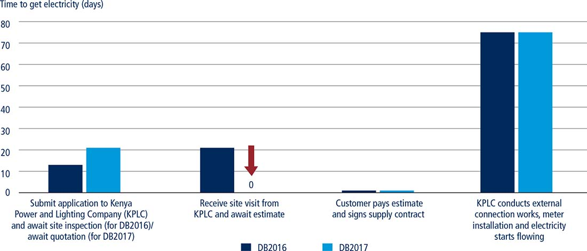
Source: Doing Business database.
Recent amendments to the Construction Law of Poland eliminated the need for an excavation permit, which previously was required for the utility to extend low voltage grids and build medium voltage transformer stations. The utility is now able to carry out external connection works without having to wait for an excavation permit to be issued. As a result of this reform Poland decreased the total time needed to obtain an electricity connection by 11 days.
Registered property rights are necessary to support investment, productivity and growth.18 Evidence from economies around the world suggests that property owners with registered titles are more likely to invest19—and they have a higher likelihood of getting credit when using property as collateral. It is essential that governments have reliable, up-to-date information in cadasters and land registries to correctly assess and collect taxes. In 2015/16, 22 economies made it easier for businesses to register property by increasing the efficiency of property transfers and improving the quality of land administration. In 17 of these economies, reforms improved the reliability of infrastructure and the transparency of information of land administration systems (figure 3.4).
FIGURE 3.4 Seventeen economies improved their score on the quality of land administration index in 2015/16
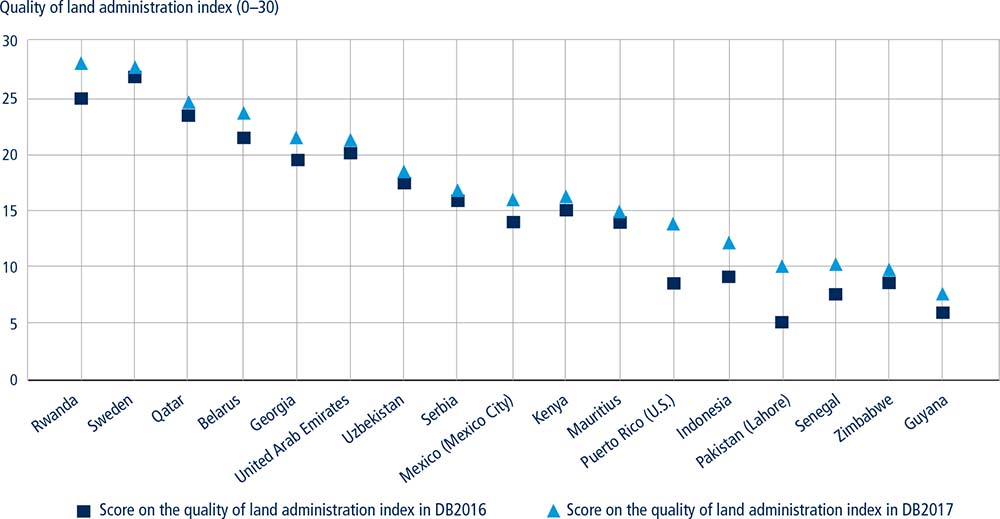
Source: Doing Business database.
Among the 190 economies included in Doing Business, Rwanda made the largest improvement on the registering property indicators in 2015/16. The Rwanda Natural Resources Authority introduced a fast track procedure for commercial property transfers, and improved the transparency of the land registry by establishing a land administration services complaints mechanism and by publishing statistics on property transfers. Mexico—another significant improver—modernized its land management infrastructure. Over the past two years, the Mexico City government acquired new information technology infrastructure which enabled it to digitize all recorded land titles and create an electronic database of land ownership.
Among all regions, Sub-Saharan Africa accounts for the largest number of reforms in 2015/16, a total of seven out of 22. Zambia, for example, decreased the property transfer tax. Senegal improved the transparency of information by publishing a list of all required documents, service standards and official fees needed to complete any type of property transaction. In Europe and Central Asia, four economies implemented changes pertinent to the registering property indicators. In 2015, Belarus introduced the new geographic information system which provides free access to information on land plot boundaries and technical information on geospatial location. Additionally, Serbia reduced the time required to transfer a property while Georgia increased coverage of all maps for privately held land plots in Tbilisi.
Indonesia implemented measures to digitize land plans and maps in both Jakarta and Surabaya. As a result of these efforts, the cadastral maps were made publicly available through an online portal. The new online platform provides open access to the geospatial information system, allowing clients to review and verify boundaries of land plots in Indonesia. Pakistan was the sole economy in South Asia to reform property transfers. Starting in 2007, the Punjab province of Pakistan launched the Land Records Management and Information Program to strengthen the capacity of land administration institutions in Lahore. During a five-year period, the project deployed an automated land records system and improved the quality of services provided by the land agency.
Nine economies—Armenia, Brunei Darussalam, The Gambia, Indonesia, the former Yugoslav Republic of Macedonia, Malawi, Nigeria, Papua New Guinea and Vanuatu—implemented reforms to strengthen access to credit by transforming and adopting new laws regarding secured transactions, including in some cases by creating an operational unified collateral registry. The parliament enacted a new law in Armenia which establishes a modern and unified collateral registry. Indonesia made registrations, amendments and cancellations at the collateral registry available to the general public through an online portal, Fidusia Online. The Gambia introduced a new law which established a centralized, notice-based collateral registry, a reform that increased The Gambia’s legal rights index score by 4 points. Furthermore, Malawi and Papua New Guinea introduced new secured transactions legislation and established modern unified collateral registries. Both registries are now fully operational, resulting in an improvement in the ability of small businesses to obtain credit as they can now use firm assets as collateral.
Twenty-seven economies implemented reforms improving their credit information systems in 2015/16 (figure 3.5). Guyana and Tanzania made the largest improvements by expanding borrower coverage. Tanzania’s credit bureau, Creditinfo, expanded its borrower coverage from 4.97% to 6.48% of the adult population, aided in part by signing agreements with retailers and merchants to share credit data on their customers. Similarly, Creditinfo Guyana, which became operational in May 2015, expanded its borrower coverage from 2.40% to 16.40% of the adult population through obtaining data from one microfinance institution, one trade creditor and one water utility company as well as from six private commercial banks.
FIGURE 3.5 Main reform features in the area of getting credit—credit information
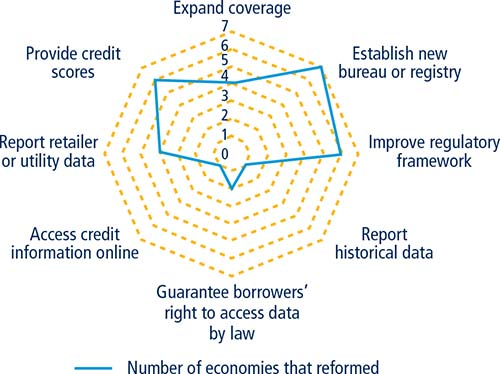
Source: Doing Business database.
Note: The scale represents the number of economies with the particular reform feature.
Over the past Doing Business cycle, six economies established legal frameworks to improve the functioning of credit reporting markets, most of them in Sub-Saharan Africa. Mozambique, for example, enacted a new law that allows the establishment of a credit bureau. The national assemblies of Burkina Faso and Togo passed the Uniform Law,20 providing the legal framework for the establishment, licensing, organization of activities and supervision of credit bureaus. This same law was previously adopted in Côte d’Ivoire, Mali, Niger and Senegal, where new credit bureaus became operational in February 2016.
Several other economies improved features of existing credit reporting systems. In six economies, credit bureaus and registries began offering credit scores to banks and other financial institutions to help them assess the creditworthiness of borrowers. In Thailand, for example, the National Credit Bureau started offering consumer and commercial credit scoring. Credit scores pool information across many creditors as well as some public information sources. Such scores offer lenders information that is otherwise unavailable to any individual creditor, including total exposure, number of outstanding loans and previous defaults. This, in turn, aids the decision making of lenders when assessing loan applications.
Brunei Darussalam, China, Tanzania and Tunisia expanded the scope of information collected and reported by credit reporting service providers by distributing data from retailers or utility companies. Economies also enacted reforms guaranteeing borrowers’ rights to access and inspect their data. In Bahrain, for example, clients of a credit bureau have the right to obtain a free credit report once every 12 months, to add information to their credit report and to file a complaint or objection related to the accuracy or limitation of the information contained in their credit report. In Pakistan there is a legal obligation for a credit bureau to provide a borrower with a copy of a credit report.
Firm-level research on a sample of nearly 1,000 firms in the United States shows a robust negative association between restrictions on shareholder rights and the market value of firms relative to the total value of their assets. The more shareholder rights are limited the more undervalued firms tend to be.21 Moreover, an analysis of controlled companies—where ownership is concentrated typically in the hands of the founding family—highlights that sound corporate governance should be comprised of two strategies: enhancing the rights of minority shareholders and moderating the powers of the controlling shareholder.22
To comply with internationally-accepted good practices, in 2015/16 19 economies strengthened the rights of minority shareholders. Georgia enacted amendments to the Law on Securities Market and the Law on Entrepreneurs. These amendments directly address shareholders’ rights with respect to preemptive rights, voting rights, ownership and control. As a result, Georgia’s score increased from 6 to 7 on the extent of shareholder rights index and from 4 to 8 on the extent of ownership and control index.
Fiji, Morocco, Saudi Arabia and Vietnam introduced greater requirements for corporate transparency into their laws and regulations. Such laws promote detailed disclosure of primary employment, appointments and remuneration of directors, ensure detailed and advance notice of general meetings of shareholders, oblige members of limited liability companies to meet at least once per year and allow shareholders to add items to the meeting agenda. These reforms resulted in an improvement in the scores of these four economies on the corporate transparency index.
Croatia, Kenya, Mauritania, Niger, Sri Lanka and Ukraine introduced legal changes focused on mitigating the potential prejudicial effect of conflicts of interest, particularly in the context of related-party transactions. Croatia, for example, now requires that directors disclose in detail to the management board and supervisory board of their company all relevant facts about the nature, relationship and existence of their conflicts of interest before considering any proposed resolution to enter into a major transaction. Likewise, in Ukraine, interested directors and interested shareholders are now excluded from the vote approving the transaction in which they have a conflict of interest. Lastly, Sri Lanka introduced a Code of Best Practices on Related Party Transactions in 2013, at first on a voluntary basis. Since January 2016 all companies listed on the Colombo Stock Exchange must comply with its requirements, which include board approval of such transactions and detailed disclosure by board members.
Properly developed, effective taxation systems are crucial for a well-functioning society. In most economies taxes are the main source of federal, state and local government revenues that are needed to fund projects related to health care, education, public transport and unemployment benefits, among others. The corporate tax burden has a direct impact on investment and growth. And tax administration efficiency is as important to businesses as effective tax rates.23 A low cost of tax compliance and efficient tax-related procedures are advantageous for firms. Overly complicated tax systems are associated with high levels of tax evasion, large informal sectors, more corruption and less investment.24 Tax compliance systems should be designed so as not to discourage businesses from participating in the formal economy. Modern tax administrations seek to optimize tax collections while minimizing administration costs and taxpayer compliance costs.
Of the 46 reforms captured by the paying taxes indicators, 26 economies either implemented new online systems for filing and paying taxes or improved the already existing online platforms in 2015 (figure 3.6). Italy, for example, introduced two improvements to its online system used by business taxpayers for filing labor taxes and mandatory contributions. Employers are now only required to enter personal information about employees once—at the beginning of employment and then it is carried forward automatically to future periods—and the payment process for labor taxes and mandatory contributions has been upgraded. The system now allows the previous period’s payment request to be copied into the current one—it retains all relevant information such as taxpayer identification and the purpose and destination of the payment.
FIGURE 3.6 Electronic systems for filing and paying taxes save compliance time worldwide
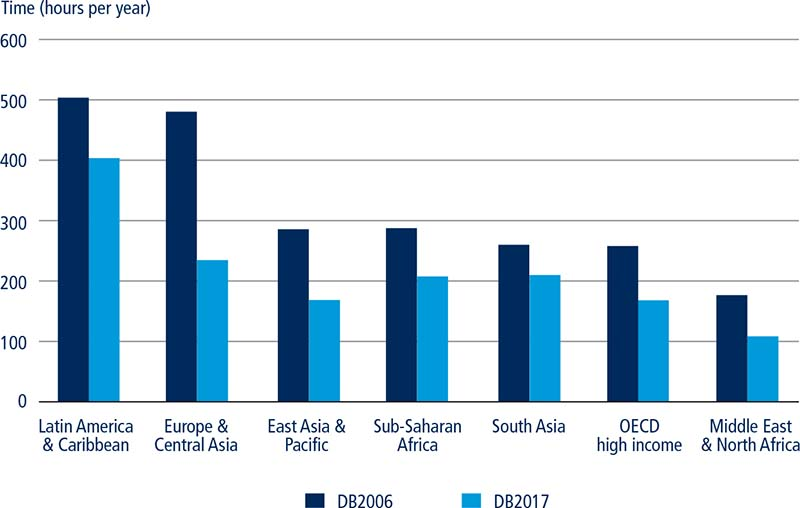
Source: Doing Business database.
Singapore was one of the first economies to introduce an electronic system for public administration. In 1992 the Inland Revenue Authority of Singapore developed an integrated and computerized tax administration system, making internal processes more efficient by freeing staff from unproductive bureaucratic tasks. As a result, between 1992 and 2000 the time needed to issue tax assessments decreased from 12–18 months to 3–5 months.25 Singapore continues to improve its tax compliance system even though it is among the best performers on the paying taxes indicators. In 2015 the online system underwent further upgrades, allowing for fewer delays in filing returns for corporate income tax and value added tax.
Other reforms were enacted to lower tax costs for businesses. Profit tax rates were reduced in nine economies while seven economies—Angola, Hungary, Italy, Jamaica, Jordan, Kosovo and Spain—either allowed more corporate expense deductions or higher fixed asset tax depreciation. The Dominican Republic decreased its corporate income tax rate while Jordan increased the depreciation rates for certain fixed assets. And eight economies abolished certain taxes. Azerbaijan, for instance, abolished vehicle tax for residents.
Largely because of the progress made in tariff reduction over the last several decades, the focus of global trade policy and reforms has now shifted from trade tariffs to trade facilitation. A better logistics performance in the trade sector is strongly associated with trade growth, export diversification and economic growth.26 In 2013, World Trade Organization (WTO) member countries signed the Trade Facilitation Agreement (TFA) committing to implement border management policies that make it easier to export and import goods across borders. A recent study suggests that, if the TFA is fully implemented by all member countries, the time spent in customs would be reduced by an average of 1.6 days for imports and 2 days for exports. By the time of the TFA’s full implementation the estimated global welfare gain is expected to be $210 billion per year, with estimates ranging from $16 to $33 annually for each resident of WTO member countries.27
Among trade reformers, many economies made trading across borders easier by improving their existing electronic systems for both imports and exports, reducing the cost and time of documentary and border compliance (figure 3.7). Argentina, for example, introduced a new Import Monitoring System for products qualified for automatic licenses which is less restrictive and faster than the one previously used. Georgia reduced document processing times by enhancing its electronic document processing system as well as introducing an advanced electronic document submission option. The latter allows electronic registration of containers shipped by sea, eliminating the outdated process of manual registration of containers. Kosovo reduced the time and cost of documentary and border compliance for exporting by advancing its automated customs data management system, streamlining customs clearance processes and implementing the Albania-Kosovo Transit Corridor.
FIGURE 3.7 Implementation of electronic systems had the most significant impact on time reduction among those economies reforming in trade in 2015/16
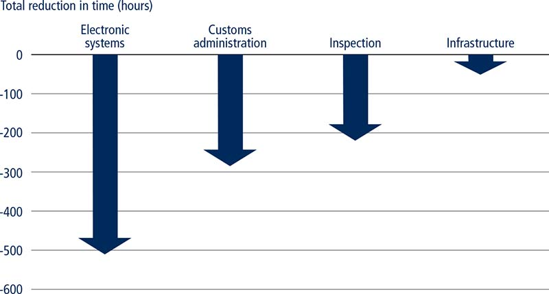
Source: Doing Business database.
Note: The time reduction captures reforms that were implemented and had a positive impact on time for the trading across borders indicators from from June 2015 to June 2016. The reforms recorded during this period can be aggregated into four wide-ranging categories: electronic systems, customs administration, inspections and infrastructure.
Another common feature of trade reforms in 2015/16 is the introduction of—and for some economies, the advancement of—the ASYCUDA (Automated System for Customs Data) World system, an automated customs data management system that facilitates both export and import processes. In Afghanistan the customs department introduced a series of technical improvements to the online document processing system. Both Grenada and Jamaica made significant upgrades to their electronic platforms, resulting in a substantial decrease in the time required for international trade processes. Their systems allow for the electronic submission of customs declarations and supporting trade documents. As a result, customs brokers no longer need to go to several customs clearance officers or government agencies to validate documents. Kosovo, Nepal and St. Lucia also eliminated the use of paper documents by upgrading their ASYCUDA World systems, allowing for payments and submissions of export declarations to be done electronically.
Efficient contract enforcement is essential to economic development and sustainable growth.28 Economies with an efficient judiciary in which courts can effectively enforce contractual obligations have more developed credit markets and a higher level of overall development.29 A stronger judiciary is also associated with more rapid growth of small firms30 and enhanced judicial system efficiency can improve the business climate, foster innovation, attract foreign direct investment and secure tax revenues.31 Conscious of the important role played by judicial efficiency, governments have been active in reforming different aspects measured by the Doing Business enforcing contracts indicators. Worldwide, revisions of alternative dispute resolution legislation and applicable civil procedure rules was the most common reform feature in 2015/16. However, none of the low-income economies made reforms in this area (figure 3.8).
FIGURE 3.8 Revisions of applicable civil procedure rules and ADR rules has been the most common reform feature in 2015/16
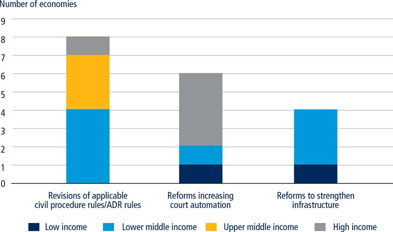
Source: Doing Business database.
Low-income and middle-income economies, predominantly in Sub-Saharan Africa and East Asia, have focused their reform efforts on strengthening judicial infrastructure. Côte d’Ivoire and Indonesia, for example, introduced dedicated simplified procedures for the resolution of small claims. Similarly, India and Niger strengthened their institutions by introducing dedicated venues to resolve commercial disputes. The presence of specialized commercial courts or divisions can make a significant difference in the effectiveness of a judiciary. Specialized courts can reduce the number of cases pending before main first-instance courts, leading to shorter resolution times within the main trial court. Commercial courts and divisions also tend to promote consistency in the application of the law, increasing predictability for court users.
Other economies, mainly high-income economies, have focused their reform efforts on attaining a higher level of court automation. Brunei Darussalam, Hungary, Norway and Spain have introduced an electronic system to file initial complaints with the competent court. Electronic filing streamlines and accelerates the process of commencing a lawsuit. Reducing in-person interactions with court officers also minimizes potential opportunities for corruption and results in speedier trials, better access to courts and more reliable service of process. These features also reduce the cost to enforce a contract—court users save in reproduction costs and courthouse visits while courts save in storage, archiving and court officers’ costs.
Some economies have pushed their automation efforts even further by introducing sophisticated and comprehensive electronic case management systems. In January 2016, for example, Rwanda implemented the Integrated Electronic Case Management System, a web-based application that integrates five main institutions of the justice sector, throughout Kigali’s courts.32 Among other features, the system allows for the automatic registration of lawsuits, electronic organization and scheduling of cases and automated claims processing. Rwandan authorities expect the system to result in considerable cost and time savings along with increased transparency and more reliable statistical data on court operations.
Many economies have concentrated their reform efforts on making complex revisions of their civil procedure laws. A third of reforms in 2015/16 entailed approvals of entirely new codes of civil procedure. Bolivia, Brazil, Ecuador, Kazakhstan, Niger and the Syrian Arab Republic are among the economies that implemented such reforms. Several economies, mainly in the Europe and Central Asia region, have approved changes to their mediation laws in an attempt to strengthen alternative dispute resolution mechanisms.
Bankruptcy laws are strongly linked to collateral eligibility requirements, access of firms to loans and long-term debt and the level of firms’ financing relative to their size.33 When it comes to bankruptcy reforms, speeding up the resolution of debt disputes may improve the likelihood of timely repayment. Increasing the protection of creditors and their participation in bankruptcy proceedings may lower the cost of debt and lead to a higher aggregate credit level. Moreover, economies that introduce new reorganization mechanisms may reduce failure rates among firms.34 Efficient bankruptcy regimes with orderly procedures for the sale and distribution of assets can improve loan terms, leverage ratios and bank recovery rates.35
Doing Business recorded 24 reforms in the area of resolving insolvency, mainly in Sub-Saharan African economies, in 2015/16. Substantial regulatory reform efforts have been undertaken by the 17 member states of the Organization for the Harmonization of Business Law in Africa, known by its French acronym OHADA. The organization adopted a revised Uniform Act Organizing Collective Proceedings for Wiping Off Debts in 2015, which introduced a simplified preventive settlement procedure for small companies and a new conciliation procedure for companies facing financial difficulties, encouraging an agreement between a debtor and main creditors. The OHADA Uniform Act also introduced provisions on cross-border insolvency that were implemented in all 17 OHADA member states. Similarly, Kenya adopted a new Insolvency Act which closely follows the insolvency framework of the United Kingdom. The new law introduced the mechanism of administration—a form of reorganization that allows insolvent companies to continue operating while negotiating a settlement with creditors.
Another region with active reformers in the area of insolvency is East Asia and the Pacific, where Brunei Darussalam, Thailand and Vanuatu made notable progress. Brunei Darussalam completely overhauled its insolvency framework. Prior to the reform, insolvency provisions for liquidation of corporate entities were included in the Companies Act and some rules were incorporated in the Bankruptcy Act, which applied to individuals. The latest reform created a designated legal act encompassing all provisions related to corporate insolvency and reflecting many modern good practices. Companies in Brunei Darussalam now have access to reorganization proceedings in the form of judicial management. Although the insolvency reform in Thailand was less comprehensive it represented a significant achievement in line with initiatives implemented in other economies in East Asia and the Pacific. Thailand expanded the application of its reorganization framework so that not only large companies—but also small and medium-size enterprises—can take advantage of this mechanism. This step is expected to provide relief to many viable companies which otherwise would be forced to cease operations.
Regulation is important to ensure efficient functioning of labor markets and adequate protection for workers. Studies have shown that labor market regulation can have an impact on aggregate job flows, productivity and informality.36 The challenge for governments is to strike the right balance between flexibility of employment regulation and worker protection.37 In 2015/16, 21 economies changed labor rules. Some made their labor regulation more flexible, others more stringent and in some economies the changes were in both directions. Most of the reforms were implemented in Sub-Saharan Africa and EU member states.
Nine economies changed regulation of fixed-term contracts. Norway amended the legislation to allow the use of fixed-term contracts for permanent tasks for a 12-month period. Angola permitted the use of fixed-term contracts for permanent tasks and extended their maximum duration to 120 months. Kazakhstan reformed the legislation to allow for two extensions of fixed-term contracts. By contrast, several economies made regulation of fixed-term contracts more rigid. In Zambia fixed-term contracts can no longer be used for permanent tasks. The Netherlands, Poland, Portugal and the United Arab Emirates reduced the maximum duration of fixed-term contracts and in Zimbabwe the maximum duration of fixed-term contracts was left to the discretion of the Employment Council.
Two economies introduced minimum wages in 2015/16. Myanmar established the first national minimum wage and São Tomé and Príncipe introduced the first minimum wage for the private sector. In addition, Mexico eliminated geographic differences related to minimum wages.
Several economies changed regulation of working hours. Cyprus and Hungary, for example, amended the legislation to allow stores to be open on Sundays. Kazakhstan reduced the premium for work on weekly holidays and Angola changed the premiums for overtime and night work as well as work on weekly holidays.
Moreover, seven economies changed the legislation governing redundancy rules and costs. In Kazakhstan, employers are no longer required to reassign an employee to a different position within the company before making the employee redundant. The Netherlands introduced severance pay for redundancy dismissals for employees with at least two years of continuous employment. Zimbabwe significantly reduced the severance package for redundancy dismissals, which was previously among the highest in the world. Angola and Myanmar increased severance pay requirements for some workers and decreased for others, depending on the length of job tenure. The Comoros reduced the length of notice period and the amount of severance pay for redundancy dismissals and Saudi Arabia increased the notice period for redundancy dismissals.
Finally, in 2015/16 four economies reformed legislation in the area of job quality. The Democratic Republic of Congo enacted a law that prohibits gender discrimination in hiring and Liberia adopted a Decent Work Act that establishes equal remuneration for work of equal value. Cabo Verde introduced unemployment insurance while Brazil expanded eligibility for unemployment benefits.
1. Barseghyan 2008; Bruhn 2013; Dabla-Norris, Ho and Kyobe 2016; Deininger and others 2015; Haidar 2012; Kaplan, Piedra and Seira 2011; Monteiro and Assunção 2012.
2. Divanbeigi and Ramalho 2015.
3. Bertrand and Kramarz 2002; Klapper and others 2006; Ciccone and Papaioannou 2007; Bjørnskov and Foss 2008; Dreher and Gassebner 2013.
4. Haidar 2012.
5. Mishra, Nair and Vishwanath 2016.
6. Haidar and Hoshi 2015.
7. Haidar and Hoshi 2015.
8. World Bank 2016b.
9. Rwanda, Ministry of Finance and Economic Planning 2000.
10. Asia-Pacific Economic Association 2015.
11. World Bank Group 2013.
12. Motta, Oviedo and Santini 2010; Klapper and Love 2011; Fritsch and Noseleit 2013.
13. Ozkan, Ozkan and Gunduz 2012.
14. World Economic Forum 2016; Lewis 2009.
15. Geginat and Ramalho 2015.
16. Abotsi (2016) finds that the number of power outages experienced in a typical month has a negative impact on the production efficiency of firms in Africa. He also finds that the number of power outages experienced in a typical month has a negative and significant impact on foreign ownership of firms in Africa.
17. Geginat and Ramalho 2015.
18. Deininger 2003.
19. Galiani and Schargrodsky 2009.
20. The Uniform Law on the Regulation of Credit Information Bureaus (BICs) in the member states of the West African Economic and Monetary Union (UEMOA).
21. Cremers and Ferrell 2014.
22. Lan and Varottil 2015.
23. For more on the World Bank Enterprise Surveys, see the website at http://www.enterprisesurveys.org.
24. Djankov and others 2010.
25. Bird and Oldman 2000.
26. Arvis and others 2010.
27. Hillberry and Zhang 2015.
28. Esposito, Lanau and Pompe 2014; Dakolias 1999; Ball and Kesan 2010; Klerman 2006; Dam 2006.
29. Dam 2006.
30. Islam 2003.
31. Esposito, Lanau and Pompe 2014.
32. These include the Rwanda National Police, National Public Prosecution Authority, the judiciary, Civil Litigation, Rwanda Correctional Services, the bar association and all citizens who interface with justice institutions.
33. Araujo, Ferreira and Funchal 2012.
34. Klapper and Love 2011.
35. Cirmizi, Klapper and Uttamchandani 2010.
36. See World Bank 2012a; Martin and Scarpetta 2011; Loayza and others 2005.
37. World Bank 2012a.